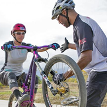

There are a lot of professional sports applications for adults, but rarely can we find outdoor activities applications designed for kids. Working parents are usually too busy to be in company with their children, and even if they had time, most of them might lack the expertise to guide and protect their children. Therefore, there is a need to develop a useful tool for outdoor activities focusing on children.

Introduction
“Wow Wellington” is an “O2O” platform, and its main functions include: introducing some outdoor theme activities (organized by professional instructors and teachers) only for kids; a range of activities for parents to decide which is the best one for their babies; real-time locating system.
Target users and potential users
Children aged from 6 to 12 and their parentsProfessional instructors and teachers looking for the children in need
Companies that provide equipment rental services
Functional requirements
When a user enter “Wow Wellington” for the first time, there are three options leading to different channels.Children icon --- enter the details page for children
Parents icon --- enter the details page for parents
Instructors icon --- enter the details page for instructors
These three main channels serve different users, and every channel has its own custom-designed content. They all have three main sub-modules.
Discover
For parents and children, they can find some interesting video logs shot by participants, popular activities, recommendations of famous instructors and basic introduction of outdoor sports.For instructors, they can find some experience logs shared by other instructors, like “how to avoid unexpected conditions” and “how to organize a successful offline activity”, and some feed-backs from parents and children.
Trip
Registration and loginInstructors and children need to have a private account before they use full functions of “Trip”.
Activities organization and participation
Instructors can organize and post an activity on “Trip”, which includes: the location, arrangements, age limitation, average session duration, equipment requirements and costs.
If parents have signed up and paid for an activity, they will receive a digital code number. Children can add this number in “Add my Trip” and then they will see activity details.
Start
When the activity is about to start, the page of “Trip” will have a change.
The grey button of “Activate” turns red, which means users can enter real-time location sharing page by tapping it, and everyone’s location will appear on the map. The color of instructors is red, while others’ is yellow. Tapping on a coordinate would show its head photo and name.
There is a timeline module for recording. Instructors can write details, goals and routes in advance. During the activity, everyone could post text comments, voice comments and photographs to share with others.
Instructors can set the route, and the boundary line for safety. When a member reaches the boundary line., he and his instructors will receive a warning message.
There is a special SOS button on kids’ page. When they are in dangerous status, kids can tap it, and instructors will receive the SOS message immediately. Also, when someone tap the SOS button, it would pop-up a new window with two icons. While one is ringing, which can ring loudly to help others find location as soon as possible, the other will send the SOS message to the server, which contains the information like the user’s name and his or her locations to the online server and staffs will check the emergency and implement emergent measures.
When the activity session is about to end, a reminder will emerge. Instructors can choose to end the session or extend the session time.
Search
For parents, the second sub-module is to search and select an activity.
They could enter key words in the search box and use different options: ages, seasons, the duration of the activity and the price range.
Settings
There will be some information showed on “Settings” after the user registers the account.
Parents need to bind credit cards or debit cards for payments.
Instructors and teachers also need to add a bank account for receiving a payment, and they need to upload certifications for check.
Nonfunctional requirements
SecurityBy adding control of access privileges, unauthorized users cannot receive response from the server.
Also, encryption ensures information cannot be intercepted or read by anyone other than the authorized users.
Usability
The corresponding interface need to have the virtues of brachylogy, rigor and precise.
Interface
Simple, clean and user friendly.
Maintenance
Adding comments would be better.
Children
Children aged from 6 to 12
Parents
Parents

Instructors
Professional instructors and teachers looking for the children in need
Server side
Language: JavaScriptMVC/MVVM: metero/expressjs
Database: mongodb
Third party
GithubPhoto upload tools
Gps
...
Client side
Language: css, html, javascriptFramework:bootstrap foundation